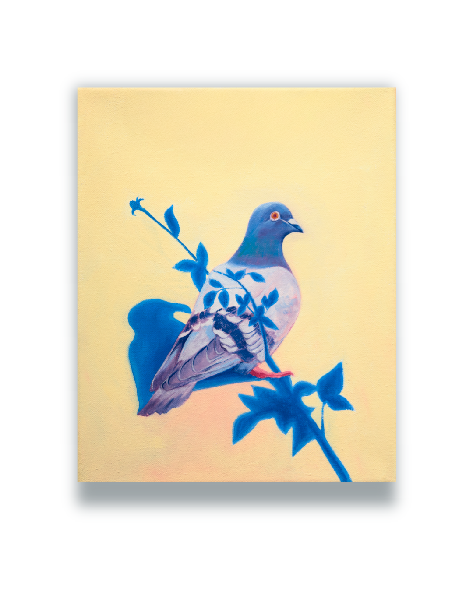
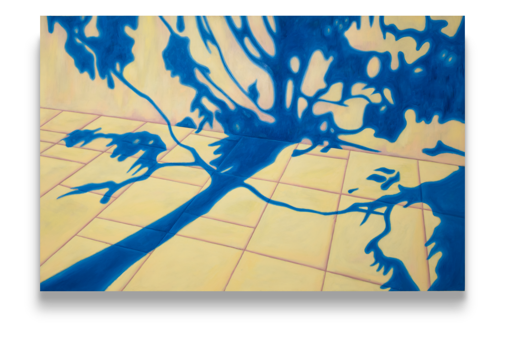
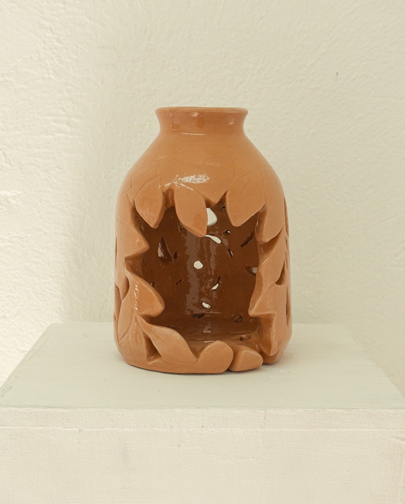

Sin sombra no hay refugio
2026
Texto curatorial
Lo cotidiano tiene personalidad de sombra. Cuando pensamos en el paisaje urbano evocamos calles, banquetas; un sol que las abraza y la luna que las arrulla, pero rara vez la sombra. Pareciera que esta asume con discreción su papel de mantenerse detrás de las cosas, tanto que su importancia se nos escapa. En esta exposición Anaid Monroy nos presenta aquello que muchas veces obviamos, incluso cuando la buscamos activamente. La sombra ha sido fundamental en la pintura de cualquier época, así como en la vida urbana: sin sombra no hay contrastes, no hay refugios en plena tarde. Pero la sombra no es consecuencia de la luz; es una forma de presencia. Delimita volúmenes, marca distancias. En la tradición pictórica, la sombra modela el cuerpo y la arquitectura, otorga profundidad y dramatiza la escena. En la ciudad, organiza la experiencia: define el ritmo de los pasos, elige los lugares de encuentro. Las piezas de Anaid Monroy desplazan la mirada hacia esos márgenes. No se trata de representar objetos, sino, de registrar su huella efímera. Las sombras aquí no son subordinadas; se convierten en protagonistas silenciosas que revelan la estructura invisible del entorno urbano. Cada imagen señala una coreografía cotidiana que ocurre sin que la advirtamos.

Poste I
Técnica mixta sobre papel
50 × 70 cm
Poste II
Óleo sobre tela
50 × 80 cm
Paloma
Óleo sobre tela
30 × 40 cm
Sombra periferico
Óleo sobre madera
55 × 85 cm
Refugio
Ceramica
30 × 40 cm